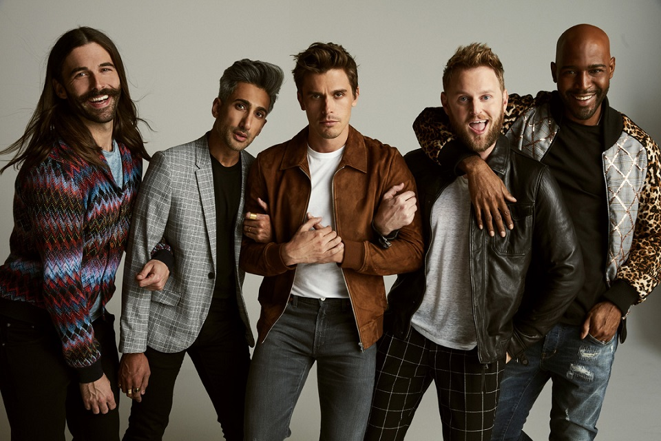

It’s hard to understand everything about men’s fashion, especially as there seems to be so many rules that you need to follow in order to create an amazing outfit. However, your usual outfits can often be made so much better with just a bit of tweaking. In this blog, I will be going through 13 of the best fashion tips, that I use myself, to make my outfit not only look better but to make it more comfortable too.
Shoes can make an outfit look 5 times better if you choose the right pair of shoes, but it can also make it look 5 times worse if you choose the wrong pair. Make sure you go with a clean pair of shoes that complement the outfit that you are wearing. This means that if you are wearing a smarter outfit, then don’t wear trainers, class it up with a pair of loafers or something that complements your style.
 https://www.endclothing.com/gb/features/comme-des-garcons-play-x-converse-online-now
https://www.endclothing.com/gb/features/comme-des-garcons-play-x-converse-online-now
Make sure that the clothes you are wearing fit you. This means that if you have a skinnier physique don’t wear baggy clothes because they will make you look shorter and won’t look as good on you as a skinnier fit would. And if you have a larger build, then maybe don’t go for the super skinny fit, a regular fit might suit you better and make you look slimmer.
They just don’t go together and will bring attention away from the outfit that you are wearing and towards the clashing colours.
 https://www.pinterest.dk/pin/551831760586025622/
https://www.pinterest.dk/pin/551831760586025622/
An expensive t-shirt is likely to last you a lot longer than a cheaper t-shirt will. It will also look better on you than the cheaper item because a well-made, high quality item of clothing will fit better and therefore look sharper. Quality > Quantity.
Watches instantly make you look more professional and can often help to pull together an outfit.
 https://www.dmarge.com/2020/04/rolex-patek-philippe-delay.html
https://www.dmarge.com/2020/04/rolex-patek-philippe-delay.html
If you are wearing a pair of dull coloured jeans and a plain jacket, wear a brighter colour t-shirt to make the outfit stand out more. Pinks, blues and reds are amazing at doing this.
If the outfit your wearing is too far out of your comfort zone then you won’t be wearing it with confidence. Confidence is key in fashion and if you aren’t comfortable in your outfit then you won’t pull it off.
 https://deadline.com/2019/01/queer-eye-japan-set-installment-set-on-netflix-following-season-3-launch-1202540544/Online shopping is so much quicker and easier when it comes to clothes shopping, but it can leave you with clothes that are the wrong fit or something that doesn’t suit you. If you try the clothes on before you buy then you can make sure that it fits perfectly matches your style before you buy it.
There are so many different patterns you can choose from, each bringing something different to your outfit. For example, a horizontal stripe can make you look slimmer and a vertical stripe can make you look taller.
 https://www.dmarge.com/how-to-wear-stripes
https://www.dmarge.com/how-to-wear-stripes
This is the same for if you are wearing brown shoes then you should wear a brown belt. Make sure that you match your leather.
No matter how much you love Star Wars, you don’t need a t-shirt to prove it. Keep your t-shirts plain and if you are into designer items, then feel free to show off the logo.
 https://swnz.co.nz/2019/04/24/new-star-wars-t-shirts-at-cotton-on/
https://swnz.co.nz/2019/04/24/new-star-wars-t-shirts-at-cotton-on/
You don’t want an outfit that is too busy and has too much going on because it just wont work. If you are wearing colour, just stick to 1 colourful items and match the rest of your outfit with clothes that will complement the colour.
Don’t wear your tracksuit bottoms out the house unless you are on the way to the gym or going to play some sports.
 https://www.sleek-mag.com/article/noughties-fashion-trends-comeback/
https://www.sleek-mag.com/article/noughties-fashion-trends-comeback/
That concludes this blog post about some fashion tips from Fred himself. Let us know if you enjoyed it and if there was any other tips you would recommend!
Author: Freddie Ratsma
Published: June 2020